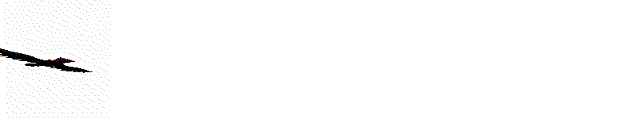
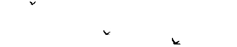

My research examines contemporary algorithmic superstition - manifestation videos, protection frequencies, repeated-number symbolism, and ritualized “claiming” in comment sections, arguing that these practices are not simply irrational behaviors amplified by technology but a form of digital folklore native to what Tommaso Venturini describes as secondary orality. My central question asks how algorithmic opacity redistributes fear, faith, and agency, and how personalized feeds encourage new forms of pattern-recognition, affect-based truth, and ritual interaction. A key primary component of the essay is the “Matrix Algorithm” section, comprised of comments collected from under TikTok videos that compare the universe to the platform’s algorithm; this functions as a vernacular archive through which users articulate belief systems in real time. My secondary sources include Marshall McLuhan’s writing on media as an extension of the nervous system and Ariane Koek’s reflections on emotion and technology, alongside research on affect theory and attention economies. Methodologically, I combine digital ethnography, textual analysis, archival collection, and auto-theory, integrating my daily screen practices and inherited Irish superstition (piseóga) to situate myself within the phenomenon rather than outside it. The essay is written but formally experimental, weaving academic theory with personal narrative and unedited comment fragments to mirror the associative logic of algorithmic feeds. This research process - documenting, collecting, iterating - directly informs my graduation trajectory, as both the essay and my broader project investigate how contemporary anxieties about control, destiny, and meaning are displaced onto opaque technological systems, where folklore is no longer inherited across generations but generated continuously through networked participation.
Historically anxiety and fear have manifested and mutated into mythical creatures, surviving through folklore. Many beliefs and traditions are constructed around universal fears: death and that which was unexplainable at the time. We seek answers in order to comfort ourselves. When faced with the true lack of control we possess over the ways of the world, we place our belief in powers beyond ourselves… (Jesus take the wheel?) Shedding the responsibility, our inherent feeling of powerlessness, we replace it with faith. The ways in which we see the world are shaped through experience, culture and understanding. I believe we all contain a certain degree of superstition. With superstition being defined as: a belief or practice resulting from ignorance, fear of the unknown, trust in magic or chance, or a false conception of causation or a notion maintained despite evidence to the contrary. Being Irish comes with an extra dose of superstition, with inherited practices that I take part in without second thought.
Obviously, I will wave at every magpie I see. When I accidentally pour too much salt into my hand when cooking, I throw it over my shoulder. I forget which shoulder it is meant to be, so I do both. No risks. You can never be too careful. The thought of walking under a ladder gives me shivers. That one feels like the biggest curse somehow. Whether I know the origins of these behaviours doesn't matter, it always comes back to the simple and ineffable argument that you can never be too careful. When looking into these superstitious behaviours, or “piseóga” in Irish, they are surrounding death or luck. Were these the pillars of life back then? Back when communities were smaller, more insular. Is this what people spent their time thinking about? Many piseóga include fairies and are instructions on how to avoid falling victim to their tricks and ill intentions. To this day I wouldn't dare enter a fairy fort. That is how you get lost. It was to the point where these superstitions were written into law, up to the 1600s it was against common law in Ireland to kill a white butterfly because they were believed to hold the souls of dead children. So these beliefs in the unexplainable and their associated behaviours go way back, and though I admittedly subscribe to many of these behaviours I do not necessarily hold the beliefs to back them up.
In Tomasso Venturini’s Online Conspiracy Theories, Digital Platforms and Secondary Orality. Toward a Sociology of Online Monsters he develops a programme of research into conspiratorial folklore,its features and its surprising adaptation to the attention regime of digital media. He argues that secondary orality is both remarkably like and remarkably unlike primary orality. Like primary orality, secondary orality has generated a strong group sense, for listening to spoken words forms hearers into a group, a true audience. If we take these ideas into account when considering online superstition and its associated behaviours it would suggest that the fears being addressed may become flattened, less specific and more universal. In the introduction to McLuhan's Understanding Media he writes: “Today, after more than a century of electric technology, we have extended our central nervous system in a global embrace, abolishing both space and time as far as our planet is concerned.” Marshall McLuhan predicted the internet as an "extension of consciousness" in The Gutenberg Galaxy: The Making of Typographic Man thirty years before its invention. This extension of our central nervous system which took place years ago has proceeded to overtake and expand all parts of ourselves, with the phone screen becoming almost portal-like, allowing us to change our identities, see across space and time and form neverending connections.
Last week my average screen time was 10 hours 5 minutes a day. Not so bad tbh i’ve had much worse. In the goon scroll gooning article August discusses the idea of being a cuck to your phone. We spoke about this after. About how even though this is a pretty “appallingly high” screen time I don't feel cucked by it. Life goes on and sometimes I view life from behind a phone and that doesn’t always bother me. That being said I must be rotted now, in the brain. That was just this week's average, and like I said I've seen worse. I've been quite online for quite some time. It can be hard to unravel oneself from the “perfect mirror” of my algorithms. Algorithms which have seen me through years of scrolling. They know me better than I know myself sometimes. I could even see them as a constructive force—for reality. All seeing, all knowing. Always listening and monitoring. Silently (judging), rewarding, punishing. Encouraging, guiding, suggesting. All for me. All for you. To be seen is to be loved. To be known and understood.
The internet has gone past influencing our behaviour and has fully integrated with our minds and how we view reality. Physical sensations, emotional states and “vibes” are the most visible common thread in the online cultures that emerged from the 2010s onwards. Far from abandoning the body in favour of purely mental universes, people seem to be interested in using technology for therapeutic, hypnotic, and spiritual purposes. Familiarity with digital tools, the consumption of increasingly diversified, sophisticated media, a growing ability to manipulate images and sounds: these are the elements that have fostered the emergence of a culture obsessed with sensations. According to Ariane Koek, who wrote about the supremacy of feelings over facts and rationality in the catalog if the exhibition of “real feelings: emotion and technology “ another important factor to take into account is the hypertrophic information ecosystem we have been immersed in for at least three decades: “ in the 21st century, feelings not facts are the new truth[...] We don't have the attention span to think, understand, check, and digest all the instantaneous and unprecedented amounts of information we can now access in a split second. But we do have the attention span to check in with how we feel - just a moment will do or the eight seconds that the average human apparently today possesses and then we can talk about and express our own feelings with unquestionable individual authority, which no one can deny as being real.
In short: feelings are instantaneous, authentic, and personal, and they are indisputable. But they are also mysterious, fleeting, and hard to put into words. In the age of information overload and endemic depression, the aim is to learn to evoke, accentuate, or silence them. This is done by using sounds, texts and images, that is, anything can be conveyed by electronic networks in the form of binary code.
With truth in flux, seemingly influenced by the fractured and scattered hyperspecificity of our personal algorithms, it is no surprise that people take this idea of truth beyond the phone, out into the real world. Allowing the digital sublime, the mystique of the algorithm to be THE tether to reality. As people would funnel their fear or confusion into superstitious practices in the past we now ground ourselves by placing belief in the very thing that contributes to our collective anxieties.
God we’re desperate for hope. Well girl it's 9:44 right now so that HAS to be a sign right ?? I was eating grapes and there were two left that were the same size and I went “I wonder what that means.” No because every little thing is a sign… this is so important. Those delusions of reference have me in a GRIP sometimes. It’s so much more fun. I went through a year of this and it genuinely rewired my brain in a positive way like yes I was lowkey going through psychosis and I had to throw away all my journals from that time because it actually looked really scary but it made me extremely self confident so idk maybe it’s a good thing. I will be as famous as Elton John. I’m right where I’m meant to be. Is this real or am I losing it. Unclaim negative energy, claim positive energy. The one time I see most commonly is 11:11 so you can imagine how difficult it is for me to descend to the plane of reality… I'll have what she’s having! Ahhh so the universe is like the tiktok fyp, u not gonna like every video but it was part of the algorithm u generated. My friend thinks about it as designing your instagram explore page – what you interact with is what you’ll get more of! The universe is TikTok now. Dream - visualise - create… YES
THANK YOU FOR ADVICE. THANK YOU UNIVERSE.
Not me 1 minute ago thinking my life works just like an algorithm. This is so meta. I love how technology can help us understand manifestation. Changing my TikTok algorithm taught me how to change my life. So quite literally it's about the vibes u give off to yourself? If my real life algorithm was as good as my TikTok algorithm I think I wouldn’t be depressed. I always thought social media (interconnected web of everyone) was symbolic of the collective consciousness. Hidden in plain sight. I think the internet is a scaffold for us as humans on earth to learn to use telepathy and to see past the limitations put on our senses. Totally!! So many times I open tiktok and get questions answered. Or my thoughts reflected back to me. Etc. So cool.
My attention span is struggling as much as I wanted to hear it all. Can you tell us how to rewire our brain and belief so we don’t follow Murphys law or manifesting things out of fear please. Algorithms are smarter than the universe. The universe is indifferent to our existence and operates irrespective of it. We superimpose meaning onto it. Software developers have been trying to model the universe in technology for ever…. each new app and each new iteration we get closer and closer. “Suffer the consequences”... this is so fake. Guys don’t fall for this, these videos don’t work and nothing bad will happen to y’all. Bro stop these are all over my fyp idc. Can ppl not see this is fake and prob for clout? Unclaiming all bad energy! Claiming good energy. Claim x 4. Claim with good energy only.